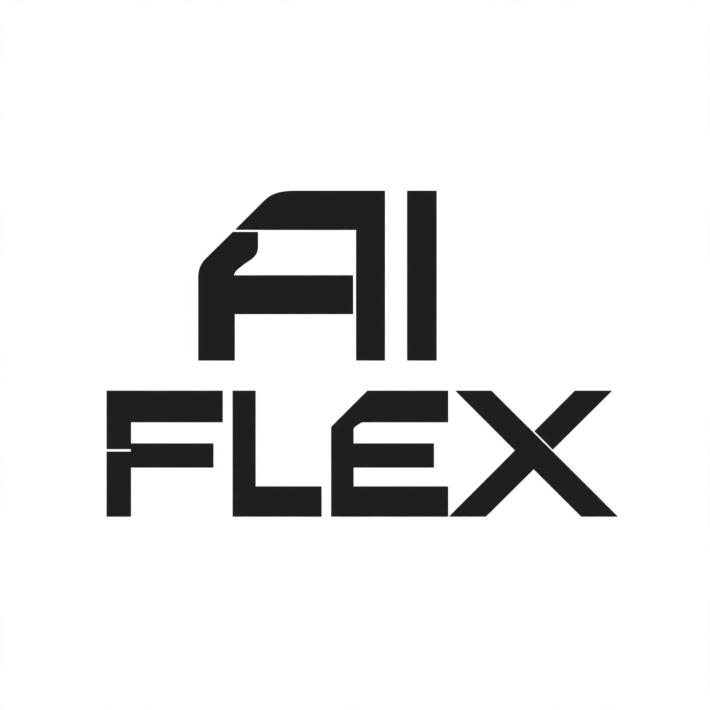
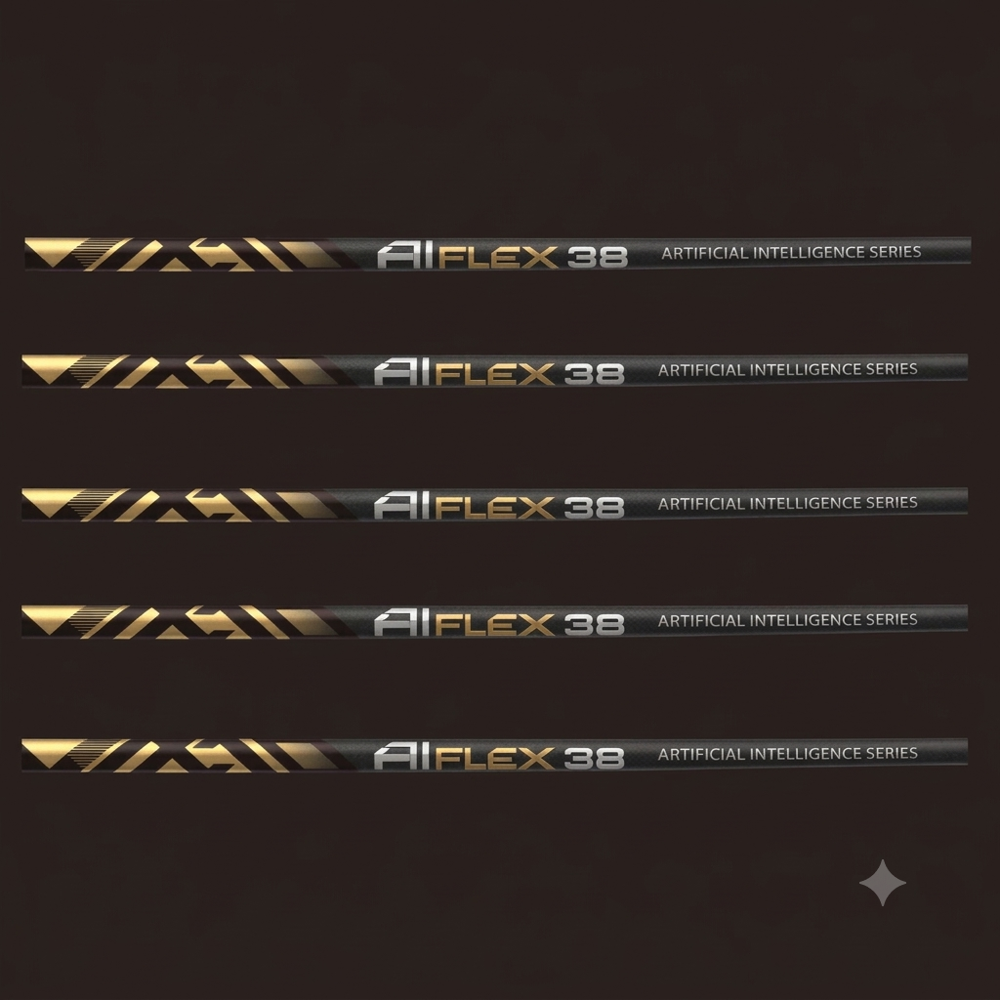
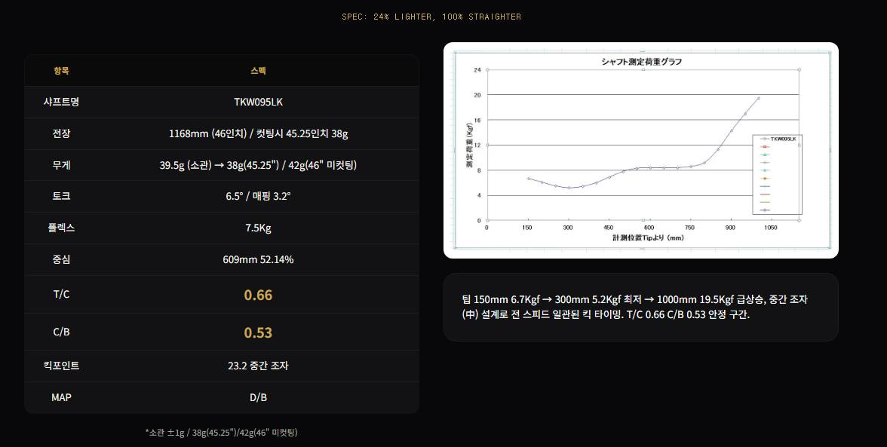
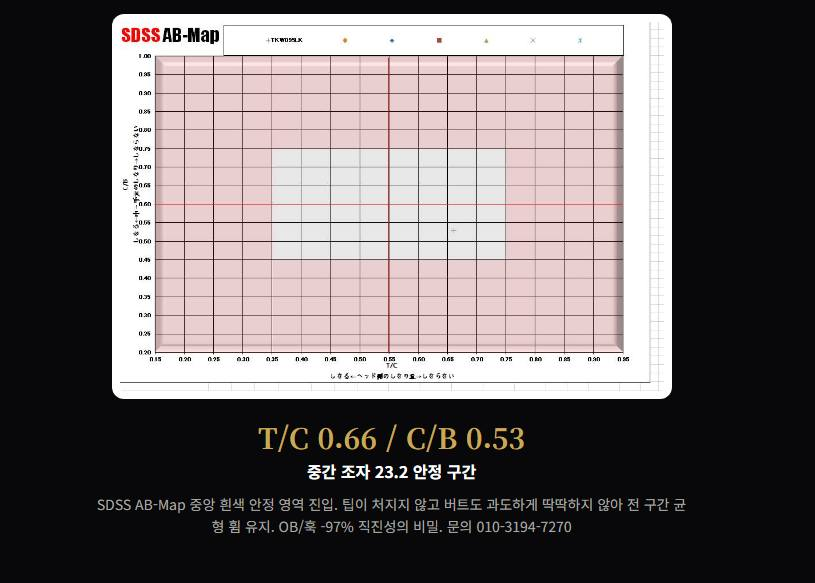

MULTIPLEX SYSTEM: SPEED-AGNOSTIC TECHNOLOGY / Aiflex38 Aiflex 38
AI가 스윙을 읽고 샤프트가 스스로 변한다

50g → 38g -24% WEIGHT REDUCTION -12g / Aiflex38 Aiflex 38 초경량인데 더 멀리 똑바로






| 구분 | 볼스피드 | 캐리 | 토탈 | 모델 |
|---|---|---|---|---|
| 40m/s | 59.4 | 199m | 222m | Aiflex38 |
| 45m/s | 65.6 | 230m | 250m | Aiflex38 |
| 50m/s | 72.5 | 255m | 272m | Aiflex38 |